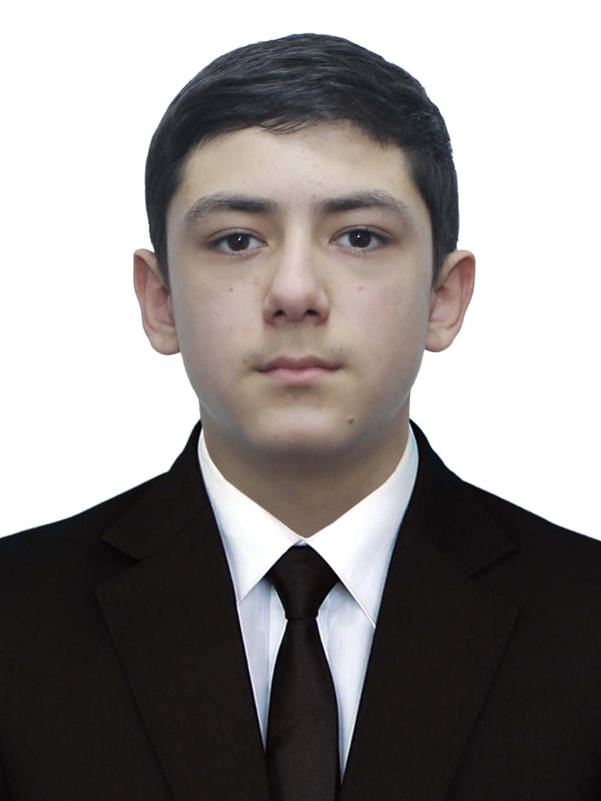

KONTENT • VIDEO • FOTO • RAQAMLI MEDIA
Sirdaryo viloyati Guliston shahar 7-maktab 7-"B" sinf o'quvchisi (02.03.2014). Yoshlar hayotidagi eng yorqin voqealar, tadbirlar va g'oyalarni zamonaviy media formatida yorituvchi faol koordinator.

Maktab va yoshlar hayotidagi muhim uchrashuvlar, tanlovlar hamda madaniy-ma'rifiy tadbirlarni tezkor yoritish.
Zamonaviy formatdagi reels, shorts, roliklar va vizual postlar orqali yoshlar auditoriyasini jalb qilish.
To'g'ri, ta'sirchan va madaniyatli axborot tarqatish hamda jamoaviy loyihalarni media orqali qo'llab-quvvatlash.
Muhim voqealarni o'z vaqtida va aniq tafsilotlar bilan taqdim etish.
Kadr, matn va ritm uyg'unligi orqali tomoshabin e'tiborini ushlab turish.
Sport, madaniyat va ijtimoiy tashabbus koordinatorlari bilan birgalikda kuchli media qo'llab-quvvatlov yaratish.
7-maktabda suratga olish, montaj va matn yozishga qiziqqan tengdoshlar jamoasini shakllantirish.
Eng yaxshi g'oyalar, darsdan tashqari hayot va yutuqlar haqida muntazam lavhalar tayyorlash.
Video montaj, dizayn va media savodxonlikni chuqur o'zlashtirib, yangi darajadagi loyihalar yaratish.